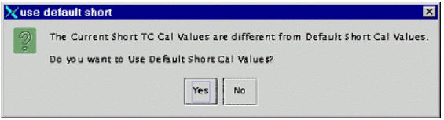
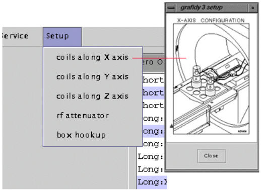
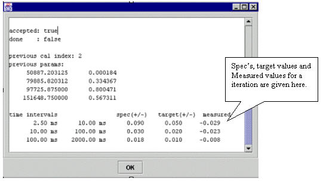

Operating Documentation
Direction 5440000, Rev# 5
Signa HDxt Service Methods
Module Version 3.0, Version Date 11/5/08
Operating Documentation |
| Required Persons | Preliminary Reqs | Procedure | Finalization |
|---|---|---|---|
| 1 | Not ApplicableNot Applicable | 3 to 6 | Not Applicable |
Grafidy 3 will require 3 hours for a BRM system and 6 hours to complete both WHOLE and ZOOM on a TwinSpeed System.
IMPORTANT! Perform an L-Coil Calibration before starting the Grafidy 3 Procedure: From the Calibration menu, select L-Coil Calibration. Click the selection to start the tool. The calibration runs automatically.
| Item | Qty | Effectivity | Part# | Manufacturer | |
|---|---|---|---|---|---|
| One of the following Grafidy kits | 1 | - | 46-271417G1 - 1.5T | - | |
| - | - | - | 46-307164G1 - 1.5T | - | |
| - | - | - | 46-307164G2 - 1.5T | - | |
| - | - | - | 46-307164G3 - 1.0T, 1.5T | - | |
| - | - | - | 46-307164G4 - 1.0T, 1.5T | - | |
| - | - | - | 46-307164G6 - 1.0T | - | |
| Grafidy Base Plate | 1 | - | 46-271410G1 | - | |
| ||||
| SHOCK HAZARD! | ||||
| THE PIN DIODE DRIVE TEST BOX SENDS 60-VOLT SIGNALS TO THE PIN DIODE BOX | ||||
| VERIFY THAT THE POWER SWITCH FOR THE PIN DIODE DRIVE BOX IS OFF (IN THE DOWN POSITION) BEFORE CONNECTING CABLE |
| ||||
| Equipment damage possibility. Do not run the coaxial cable under the RF door. The RF door can cut the outer cable jacket, exposing the braided shield, and grounding it to the RF door. These two grounds are not at the same potential and will adversely affect your calibration. | ||||
| ||||
| Equipment damage possibility. The coils used in the Grafidy phantoms require low RF power and can be damaged if the appropriate attenuation is not used! | ||||
| Condition | Reference | Effectivity |
|---|---|---|
Grafidy 3 Equipment Setup and Prescan Check are complete. | - | - |
This procedure documents using the Browser, but this tool is still accessible through the tool menu. Go to the Service Desktop and start the Service Brower, if it is not already started, by clicking [Service Browser] button on the left tool bar.
On the Service Browser start the Grafidy3 calibration. See Illustration 1 for instructions.
Illustration 1: Starting the Grafidy 3 Tool

The Grafidy3 window will first open with a selection box to set the gradient mode for Grafidy 3, if it is a twin gradient system (TRM). Choose between Whole or Zoom modes by clicking the appropriate selection and clicking the <OK> button. See Illustration 2. For systems with a TRM, both Whole and Zoom have to be calibrated. To switch mode, exit Grafidy 3, and then restart it and select the next mode to calibrate.
Illustration 2: Selecting Gradient Mode

Next, select the [Zero Out] tab. See Illustration 3.
Illustration 3: Zeroing Old Cal Files

You can select all (components) by clicking the [Select All] button, or select coil X axis only (xx, yx, zx linear and xx b0 for long and very long), or coil Y axis only, or coil z axis only. You can clear selections, too.
You can also select an individual component (e.g., long xx linear) or components (e.g., long xx linear, and long xx b0) by holding down the <Ctrl> key on as you click the components on the list.
The selected components are highlighted. The selection itself will not zero out anything. Click the[Zero Out Cal Values] button to actually zero out cal values in cal files (grafidyx/y/z.cal).
The naming convention for a component is this: the first letter refers to the gradient axis, the second letter refers to the coil axis, for example, yx means the gradient is on the y axis, but the coils should be placed on the x axis.
It is not always required to zero Cal values. It is less time-consuming and advisable to touch up vales when possible. If you meet any of the following criteria, click the axis button that needs to be cleared out, or click the [Select All] button and then click the [Zero Out Cal Values]:
If you are working with a new or new system upgrade, zero out the cal values.
If the previous eddy current calibration was done using ECMT, zero out the cal values.
If the previous eddy current calibration was done prior to Signa software revision 9.0, zero out the cal values
If, after attempting to touch up (calibrated eddy current without zeroing out the cal values), values did not converge/specifications not met, zero out the cal values.
Use default short time constant cal values rather than calibrating short TC on a system-by-system basis. When you click either “auto mode” or “manual mode” (first time per tool invocation), the tool will check whether the short TC cal values are the same as the default values. If not, the Grafidy 3 tool will display a message asking if you want to use Default Shorts Cal Values. Answer [Yes]. See Illustration 4.
Illustration 4: Default Short Cal Values Popup

By default, short time constant eddy current are not calibrated. Instead, a set of default calibration values are used. Those values depend on a gradient coil (brm/crm/trm_whole/trm_zoom) and gradient driver (ACGD/ACGD_Lite) combination. Grafidy 3 will check/load proper short TC cal values based on the system configuation.
Position the coils in the magnet bore for the axis to be calibrated. A diagram of proper coil positioning can be viewed from the menu bar under [Setup] by selecting the axis that will be calibrated. See Illustration 5.
Illustration 5: Setting Axis to Calibrate

Click on the [Auto Mode] tab
Select the axis that is consistent with the coils set up in the magnet bore and then click the <Scan> button. The [Scan] will be grayed out and the [Abort] button will be activated until the scan is either finished or aborted.
Only one plane can be calibrated at a time. After the completion of a plane, the Grafidy coils must be switched to the next plane to be calibrated and the scan started again. See coil plane configurations. Each axis will take approximately 60 minutes to complete. See Illustration 6.
Illustration 6: Auto Mode Setup

Each component of the axis (e.g.. long:xx, long:yx, long:zx, vlong:xx) will run a maximum number of iterations; by default, 5 iterations for long and 5 for very long . Also by default, short TC is not selected (therefore will not be calibrated). If a target (about half of the spec for long on-axis) is reached before the maximum number of iterations is reached, the system will stop doing iterations for the component.
As each component finishes an iteration of scan/analysis, the residual eddy current of the measurement will show up in the result area/table. The output of the result will be color-coded. Red text indicates values out of spec. Green indicates values within.
Review the numeric output values from the auto mode scan. Verify that the results of final iteration for each component are within spec. See Illustration 7 for help in reading output values.
Illustration 7: Reading Output

You can check the eddy current measurement and fitting by clicking in any cell that has values filled in. Then click the [Show] button. Refer to Illustration XX for interpreting graphical data.
In the left column with auto scale turned off (so they have same vertical scales) from the 1st to the 2nd to the 3rd iteration, the residual eddy current become smaller and smaller.
In the right column from the 1st to the 2nd to the 3rd iteration, viewing the data in Auto-Scale to spread the plot views out (the plot is scaled from minimum values to maximum values, for the 1st iteration the scale is ~1.8, 2nd iteration ~0.06, 3rd iteration ~0.015 in this example). While the residual eddy current becomes smaller when iterations are going on, the quality of the fit between measured curve and fitted curve (goodness of fit) becomes poorer. When those two curves have little in common, which is seen in iteration 3, it is not likely that any further iterations will improve much, and it is time to stop iteration because the system limit has been reached.
Illustration 8: Interpreting Grafidy Plots

Click [More] to show coil positions, spec values, target values and measured values. See Illustration 9 and Illustration 10. You will need to scroll UP to get to the position values.
Illustration 9: Coil Position

Illustration 10: Stem Specs, Target and Measured Values

If a component is not in spec after the maximum number of iterations, you will need to use manual mode to calibrate that component. See Manual Prescan Mode for help in that procedure.
Repeat the calibration procedure for all three axes. Always ensure the physical coil axis matches the selected scan axis or errors will result.
After all three axes are done, re-position the coils and re-scan long on-axis components other than the last scanned on-axis component. For example, if the order of the axes scanned is x,y,z, and after last axis (z) is done, you will need to re-scan long xx and long yy. Long xx b0 and long yy b0 may be out of spec again (due to cross terms). If this is the case, do another scan until they are in spec again.
The final step (12) is best suited for manual mode.
No finalization steps.